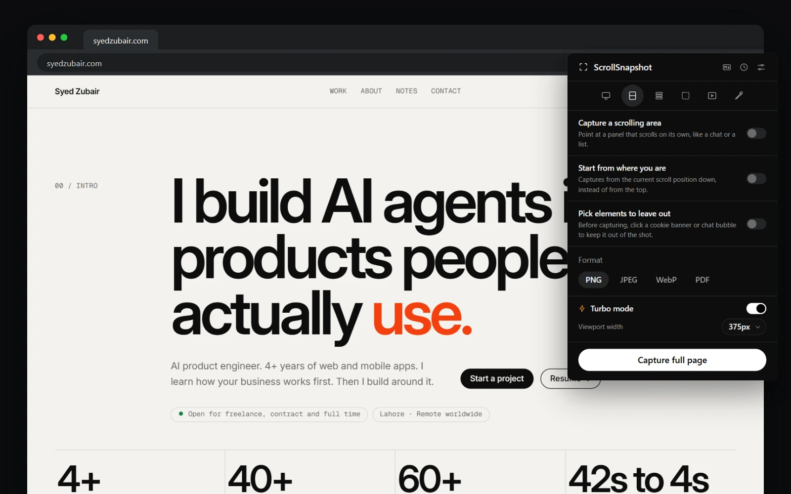
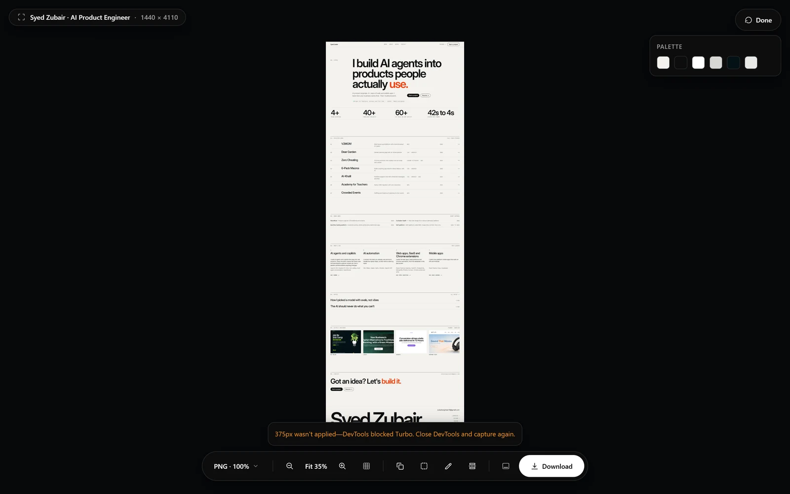

Standard or Turbo
The standard engine scrolls the page, captures each visible piece, and joins the pieces. It works on every page without attaching a debugger, but it is paced by a limit Chrome puts on screenshots, so a very long page takes longer, and a sticky element or a header that slides can leave a mark at a seam.
Turbo asks Chromium for the whole page at once. There is no scrolling, no seams, and no two-per-second limit. The cost is that Chrome displays a debugging banner across the tab while ScrollSnapshot is attached. That banner is part of the browser, and ScrollSnapshot does not hide it.
Turn it on
Turbo mode is a switch with a lightning-bolt icon, just above the Capture button in the popup. You can also choose Standard or Turbo under Capture in Settings. When Turbo is on, a Viewport width dropdown appears beneath it.
Turning Turbo off leaves every other capture mode available. It only changes how a page is photographed.

- Open ScrollSnapshot on the tab you want.
- Choose Full page or Slices, and switch Turbo mode on.
- Press Capture, and leave Chrome's banner in place until it finishes.
Capture at another width
The Viewport width dropdown offers Full width, mobile and tablet widths, and Custom. It is available for Full page and Slices. Turbo lays the page out at that width before measuring it, so responsive breakpoints fire and the page height you get belongs to the reflowed layout. The chosen width is cleared again before Turbo detaches.
The standard engine cannot offer this. It photographs the real browser window, so only Turbo's DevTools emulation can lay the page out at another width. The guide to chosen viewport width covers the presets and what to check.
Headers that move, tabs that zoom
Many sites hide their navbar on a scroll down and slide it back on a scroll up. Turbo waits, for up to a moment and a half, for fixed and sticky elements to stop moving before it renders, so the bar is not caught part way. It also starts from the top of the page, so an earlier scroll position cannot shift a fixed header, and puts the original position back afterwards.
Turbo allows for the tab's browser zoom, so a tab at 125 percent no longer produces a magnified, shorter capture.
Very tall pages
Chromium can render only so tall an image at once. Turbo renders a tall page in bands and joins them, so a page does not repeat itself part way down. A page too tall for one image is scaled to fit, with the same notice the standard engine gives. Choose Slices when full resolution matters more than having a single file.
When Turbo steps aside
Turbo never fails a capture it cannot attach to. It switches to the standard engine and tells you why:

- DevTools is open on the tab. Chrome allows only one debugger at a time, so Turbo cannot attach. Close DevTools and capture again.
- You chose to capture a scrolling area. Turbo photographs the document, not a panel scrolling inside it, so the standard engine is used.
- Your organisation blocks it. A managed browser may refuse the debugger. Switch Turbo off and the standard engine captures the page normally.
- If you chose a width and see this notice, the capture was taken at the real window width, not the one you chose. Close DevTools and capture again.
- The notice stays with the saved capture and its result page, so you can still tell later how it was taken.